@Tasnimnews_Fa
📝 原文: Mehdi Rasouli's memory of meeting the martyred Leader of the Revolution
🇨🇳 译文: 迈赫迪·拉苏利 (Mehdi Rasouli) 与革命烈士领导人会面的记忆

🕒 2026-05-19T08:19:49+00:00
| 来源 | 旧窗口内数量 | 本次新增 | 本次淘汰 | 当前窗口内共有 |
|---|---|---|---|---|
| 推文 + Dawn 新闻 | 0 | 37 | 0 | 37 |
| ARY News | 0 | 0 | 0 | 0 |
注：淘汰数 = 旧窗口内数量 + 本次新增 - 当前窗口内共有
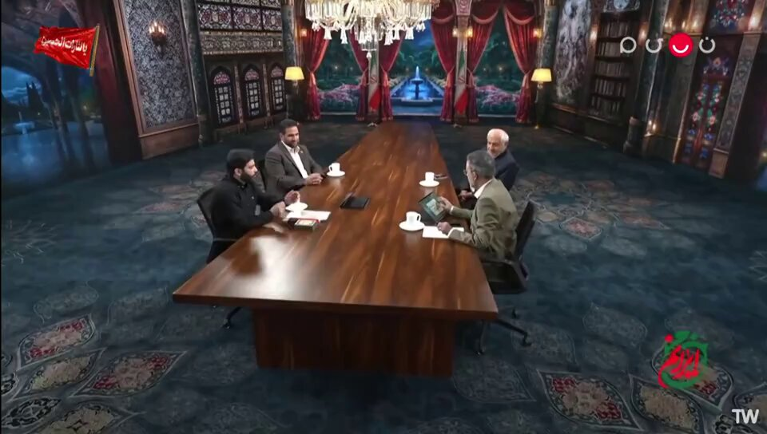
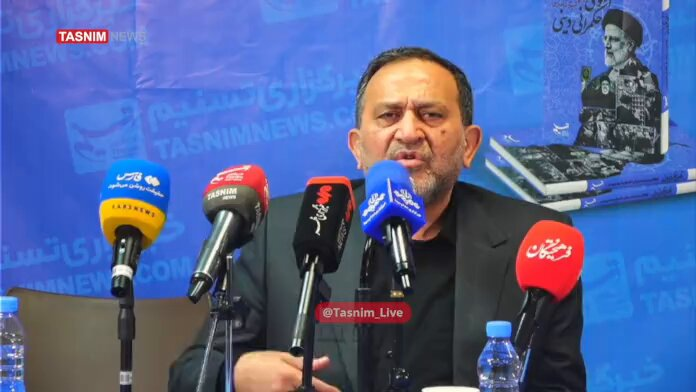


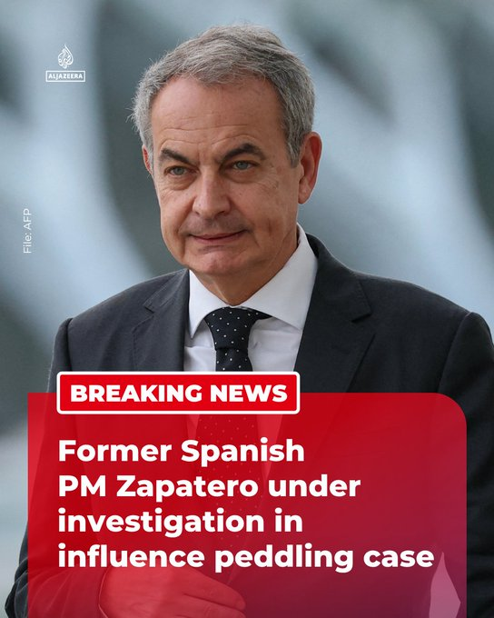

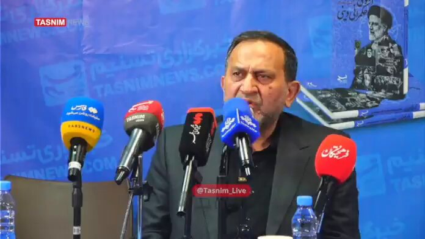
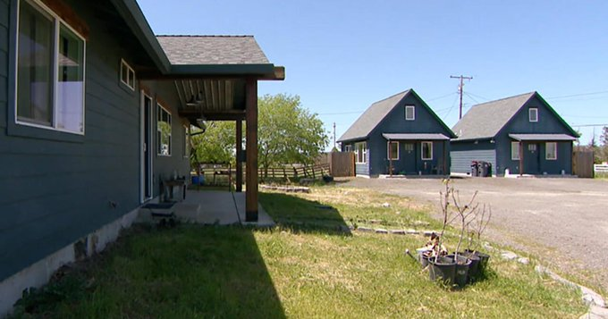
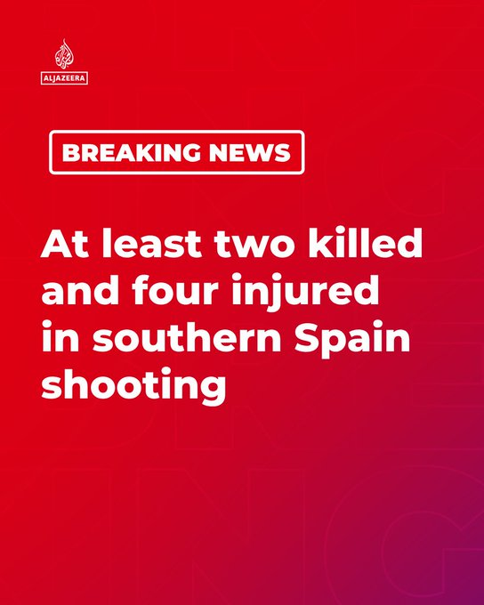
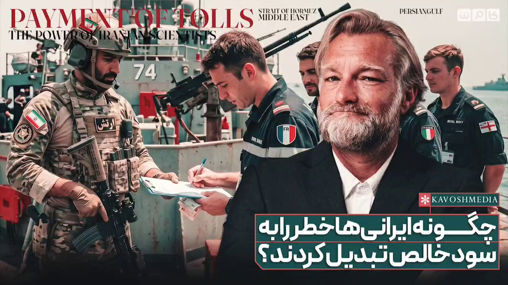
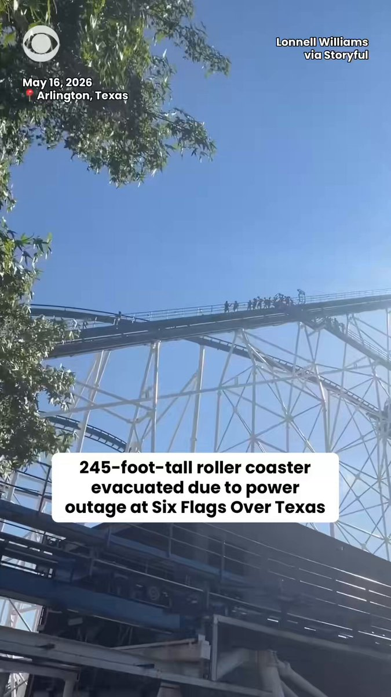


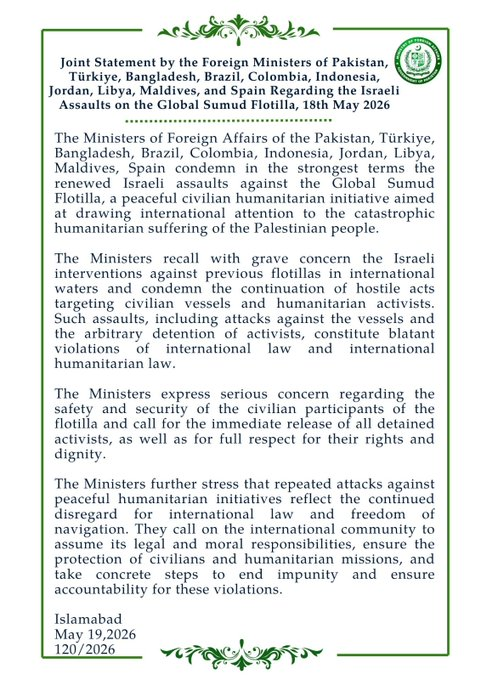
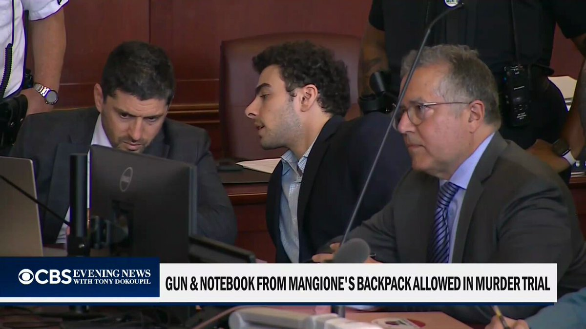
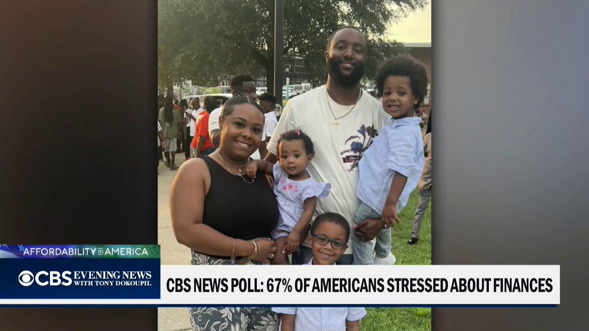


暂无文章。